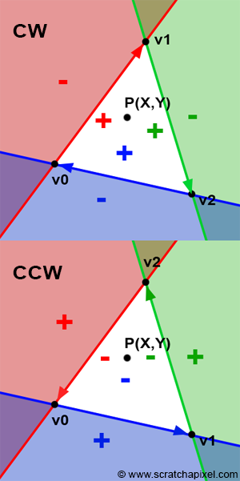

Computer graphics in Game development
Ivan Belyavtsev
25.01.2020
 [1]
Let’s implement it together
Idea: sort all triangles from farthest to nearest from camera [2]
Let’s implement it together
vector<color> frame_buffer;
vector<float> depth_buffer; //+Infs, for instance
void SetPixel(unsigned short x, unsigned short y, float z, color color)
{
frame_buffer[y * width + x] = color;
depth_buffer[y * width + x] = z;
}[2]
bool DepthTest(unsigned short x, unsigned short y, float z)
{
return z < depth_buffer[y * width + x]; //Depends on Z-axis directions
}
void SetPixel(unsigned short x, unsigned short y, float z, color color)
{
if (DepthTest(x, y, z))
{
frame_buffer[y * width + x] = color;
depth_buffer[y * width + x] = z;
}
}[2]
Let’s implement it together
1. Rasterization: A practical implementation [Electronic resource]. 2015. URL: https://www.scratchapixel.com/lessons/3d-basic-rendering/rasterization-practical-implementation/rasterization-stage.
2. Marschner S., Shirley P. Fundamentals of computer graphics, fourth edition. 4th ed. Natick, MA, USA: A. K. Peters, Ltd., 2016.